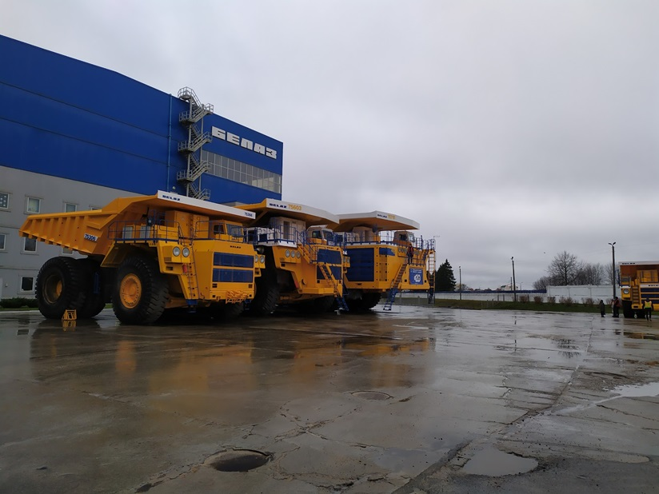
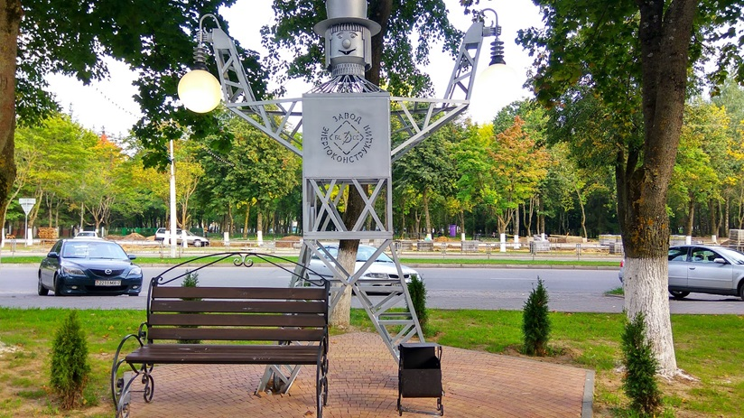
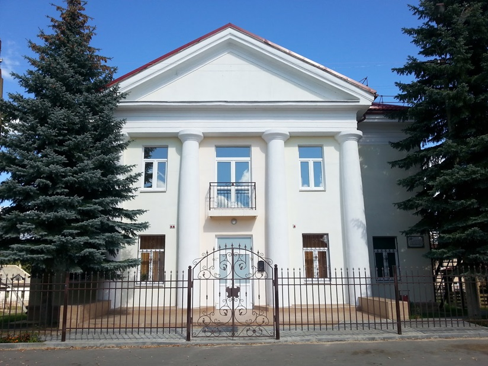
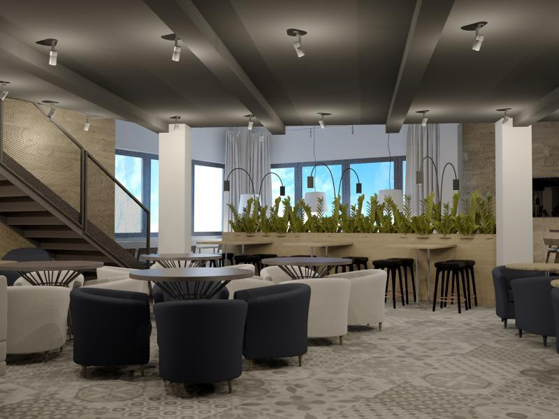
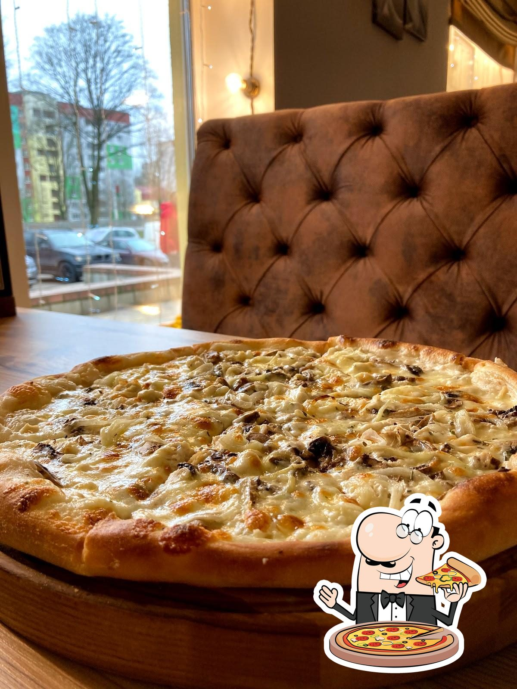
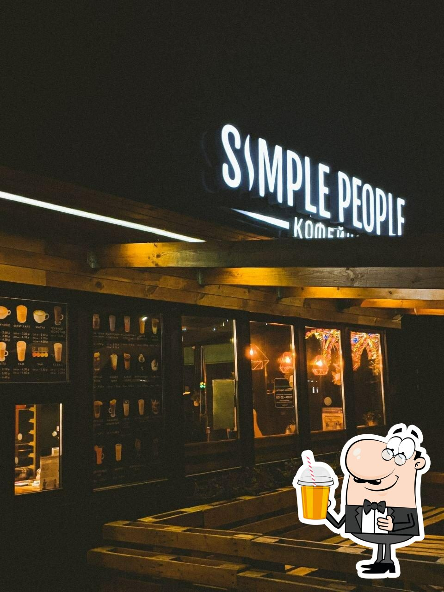

Жодино - город в Минской области
Жодино — это город в Минской области Беларуси, расположенный на реке Плисе. Его история берет начало в XVI веке, когда местность, где сейчас расположен город, была заселена. Первое письменное упоминание о Жодино относится к 1643 году. В XIX веке Жодино было небольшой деревней. Существенное развитие города началось в середине XX века, когда в 1958 году здесь был построен Белорусский автомобильный завод (БелАЗ). Этот завод стал основой экономического роста города, так как он производит карьерные самосвалы, известные по всему миру.
В 1963 году Жодино получило статус города. В последующие десятилетия город продолжал развиваться благодаря промышленности, особенно машиностроению.В советское время в Жодино активно строились жилые районы, школы, детские сады и объекты социальной инфраструктуры. После распада Советского Союза город продолжал развиваться и модернизироваться, сохраняя значимость как важный промышленный центр Беларуси.
Сегодня Жодино — это современный город с развитой инфраструктурой, культурными учреждениями и множеством памятников, напоминающих о его истории и индустриальном прошлом.
Этот город расположенный в Минской области Беларуси, может предложить туристам несколько интересных аспектов. Вот пять причин, почему стоит посетить этот город:
- БелАЗ: Жодино знаменит своим автомобильным заводом БелАЗ, где производятся одни из крупнейших карьерных самосвалов в мире. Экскурсия на завод позволит увидеть впечатляющие машины и узнать больше о производственном процессе.
- Парк культуры и отдыха: В Жодино есть уютный парк культуры и отдыха, где можно приятно провести время с семьей или друзьями, прогуляться, покататься на аттракционах и просто насладиться природой.
- Исторические памятники: В городе есть несколько памятников и мемориалов, которые посвящены событиям Великой Отечественной войны. Например, памятник воинам-освободителям, который напоминает о героизме и подвиге советских солдат.
- Современная инфраструктура: Жодино предлагает развитую инфраструктуру для комфортного проживания и отдыха. Здесь есть хорошие гостиницы, рестораны и кафе, где можно попробовать как белорусскую, так и международную кухню.
- Культурные мероприятия: В Жодино регулярно проходят различные культурные мероприятия, включая концерты, выставки и театральные представления. Эти мероприятия позволяют лучше понять культуру и традиции региона.
Эти причины делают Жодино привлекательным местом для посещения как для туристов, так и для деловых путешественников.
Добро пожаловать в Жодино!
| Город | Жодино |
| Население | 63 744 чел. |
| Площадь | 25,8 км² |
Достопримечательности Жодино
Музей БелАЗ
Находится на территории Белорусского автомобильного завода. Относится к популярным объектам промышленного туризма. На примере предприятия экспозиция знакомит с историей машиностроения. Посетители могут увидеть модели техники, производимой на заводе с момента его основания в середине XX в. до наших дней. Среди них самосвалы, катки, кусторезы, снегоочистители, тягачи, бульдозеры, автопоезда. Музейные экспонаты включают также документы и фотографии, повествующие об этапах создания и развития завода, его работниках, наградах и достижениях. По предварительной записи проводятся экскурсии. Возможно посещение производственных цехов и открытых площадок, катание на самосвале.
Аллея фонарей
Открыта в 2017 г. Находится на центральном городском проспекте. Аллея включает в себя серию уличных фонарей, каждый из которых посвящен конкретному городскому предприятию и отражает его характерные особенности. Все объекты имеют индивидуальное оформление, состоят из элементов освещения и оригинальной композиции:
- фонарь местного хлебозавода снабжен колоритной фигурой пекаря в поварском колпаке.
- предприятие теплоснабжения приглашает присесть в уютное кресло рядом с радиатором отопления.
- трикотажная компания разместила символическую швейную машинку.
Всего представлено более 15 объектов. Рядом с каждой зоной имеются скамейки для отдыха. В вечернее время включается освещение.
Краеведческий музей
Основан в 2008 г., спустя 6 лет открылась первая экспозиция. Занимает капитально отремонтированное двухэтажное каменное здание классической архитектуры. Музейная коллекция знакомит с историей местных земель с древних времен, этапами развития города от маленького поселка до крупного промышленного центра. Посетители могут увидеть археологические находки, предметы домашнего обихода разных эпох, церковную утварь, образцы оружия, градостроительные планы, фотографические и документальные материалы. Отдельный раздел посвящен природе края.
Лучшие заведения
Pizza Smile
Сеть пиццерий "Pizza Smile" уже 10 лет радует жителей Беларуси своими вкусными блюдами, уютным интерьером, быстрым обслуживанием и внимательным персоналом, который умеет создавать комфортную обстановку для каждого Гостя. Выбор блюд и напитков привлекают своим разнообразием и разумными ценами.
Здесь Вы можете попробовать пиццу и пасту, приготовленную в настоящих итальянских традициях, а также американскую пиццу с пышным краем. Для любителей европейской кухни есть широкий выбор закусок, супов, горячих блюд из мяса, птицы и рыбы, приготовленных на гриле. В кафе позаботились и о почитателях суши - во всех заведениях, кроме города Минска, готовят блюда традиционной японской кухни. А для Гостей, живущих в бешеном ритме мегаполиса, заведение может предложить вкусные и сытные бизнес-ланчи. В заведениях сети не обошли вниманием и блюда белорусской кухни, которые так любимы всеми белорусскими и иностранными гостями.
FOOD-HUNTER
В этом ресторане можно попробовать вкусно приготовленные суши, пиццу и роллы. Из напитков здесь стоит попробовать неплохой кофе. В FOOD HUNTER Pizzeria & Sushi Bar уютная атмосфера. Большинство гостей отмечают, что персонал в этом месте профессиональный. Многие клиенты говорят, что сервис здесь быстрый. По словам посетителей, в этом заведении хорошие цены. Роскошный интерьер привлекает многих клиентов.
Simple People
Дети играют-родители отдыхают . Симпл Пимпл-это место ,где можно бегать , прыгать , кричать , играть и весело провести День рождения , Новый год , или Выпускной !
Комнаты для праздников, cобственная кухня, cтолы для родителей, удобное расположение.
Попробуйте вкусный кофе. В Simple People уютная атмосфера. Большинство клиентов говорят, что персонал в этом месте гостеприимный. По словам посетителей, сервис быстрый. Здесь впечатляющий интерьер.